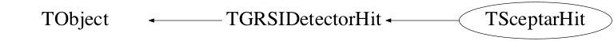

class TSceptarHit: public TGRSIDetectorHit
TSceptarHit This is class that contains the information about a sceptar hit. This class is used to find energy, time, etc.
This class is also known as (typedefs to this class)
vector<TSceptarHit,allocator<TSceptarHit> >::value_typeFunction Members (Methods)
public:
| TSceptarHit() | |
| TSceptarHit(const TSceptarHit&) | |
| virtual | ~TSceptarHit() |
| void | TObject::AbstractMethod(const char* method) const |
| bool | AnalyzeWaveform() |
| virtual void | TObject::AppendPad(Option_t* option = "") |
| virtual void | TObject::Browse(TBrowser* b) |
| Int_t | CalculateCfd(double attenuation, int delay, int halfsmoothingwindow, int interpolation_steps) |
| Int_t | CalculateCfdAndMonitor(double attenuation, int delay, int halfsmoothingwindow, int interpolation_steps, vector<Short_t>& monitor) |
| vector<Short_t> | CalculateCfdMonitor(double attenuation, int delay, int halfsmoothingwindow) |
| vector<Short_t> | CalculateSmoothedWaveform(unsigned int halfsmoothingwindow) |
| static TClass* | Class() |
| virtual const char* | TObject::ClassName() const |
| virtual void | Clear(Option_t* opt = "") |
| virtual TObject* | TObject::Clone(const char* newname = "") const |
| virtual Int_t | TObject::Compare(const TObject* obj) const |
| static bool | TGRSIDetectorHit::CompareEnergy(TGRSIDetectorHit* lhs, TGRSIDetectorHit* rhs) |
| virtual void | Copy(TSceptarHit&) const |
| void | TGRSIDetectorHit::CopyFragment(const TFragment&) |
| virtual void | TObject::Delete(Option_t* option = "")MENU |
| virtual Int_t | TObject::DistancetoPrimitive(Int_t px, Int_t py) |
| virtual void | TObject::Draw(Option_t* option = "") |
| virtual void | TObject::DrawClass() constMENU |
| virtual TObject* | TObject::DrawClone(Option_t* option = "") constMENU |
| virtual void | TObject::Dump() constMENU |
| virtual void | TObject::Error(const char* method, const char* msgfmt) const |
| virtual void | TObject::Execute(const char* method, const char* params, Int_t* error = 0) |
| virtual void | TObject::Execute(TMethod* method, TObjArray* params, Int_t* error = 0) |
| virtual void | TObject::ExecuteEvent(Int_t event, Int_t px, Int_t py) |
| virtual void | TObject::Fatal(const char* method, const char* msgfmt) const |
| virtual TObject* | TObject::FindObject(const char* name) const |
| virtual TObject* | TObject::FindObject(const TObject* obj) const |
| UInt_t | TGRSIDetectorHit::GetAddress() const |
| virtual Int_t | TGRSIDetectorHit::GetCfd() const |
| TChannel* | TGRSIDetectorHit::GetChannel() const |
| Float_t | TGRSIDetectorHit::GetCharge() const |
| virtual UInt_t | TGRSIDetectorHit::GetDetector() const |
| virtual UInt_t | TGRSIDetectorHit::GetDetector() |
| virtual Option_t* | TObject::GetDrawOption() const |
| static Long_t | TObject::GetDtorOnly() |
| virtual double | TGRSIDetectorHit::GetEnergy(Option_t* opt = "") const |
| virtual double | TGRSIDetectorHit::GetEnergy(Option_t* opt = "") |
| Int_t | GetFilterPattern() const |
| virtual const char* | TObject::GetIconName() const |
| virtual const char* | TObject::GetName() const |
| virtual char* | TObject::GetObjectInfo(Int_t px, Int_t py) const |
| static Bool_t | TObject::GetObjectStat() |
| virtual Option_t* | TObject::GetOption() const |
| virtual TVector3 | GetPosition(Double_t dist = 0) const |
| virtual Double_t | TGRSIDetectorHit::GetTime(Option_t* opt = "") const |
| virtual ULong_t | TGRSIDetectorHit::GetTimeStamp(Option_t* opt = "") const |
| virtual const char* | TObject::GetTitle() const |
| virtual UInt_t | TObject::GetUniqueID() const |
| vector<Short_t> | TGRSIDetectorHit::GetWaveform() const |
| virtual Bool_t | TObject::HandleTimer(TTimer* timer) |
| virtual ULong_t | TObject::Hash() const |
| bool | InFilter(Int_t) |
| virtual void | TObject::Info(const char* method, const char* msgfmt) const |
| virtual Bool_t | TObject::InheritsFrom(const char* classname) const |
| virtual Bool_t | TObject::InheritsFrom(const TClass* cl) const |
| virtual void | TObject::Inspect() constMENU |
| void | TObject::InvertBit(UInt_t f) |
| virtual TClass* | IsA() const |
| virtual Bool_t | TObject::IsEqual(const TObject* obj) const |
| virtual Bool_t | TObject::IsFolder() const |
| Bool_t | TObject::IsOnHeap() const |
| virtual Bool_t | TObject::IsSortable() const |
| Bool_t | TObject::IsZombie() const |
| virtual void | TObject::ls(Option_t* option = "") const |
| void | TObject::MayNotUse(const char* method) const |
| virtual Bool_t | TObject::Notify() |
| void | TObject::Obsolete(const char* method, const char* asOfVers, const char* removedFromVers) const |
| static void | TObject::operator delete(void* ptr) |
| static void | TObject::operator delete(void* ptr, void* vp) |
| static void | TObject::operator delete[](void* ptr) |
| static void | TObject::operator delete[](void* ptr, void* vp) |
| void* | TObject::operator new(size_t sz) |
| void* | TObject::operator new(size_t sz, void* vp) |
| void* | TObject::operator new[](size_t sz) |
| void* | TObject::operator new[](size_t sz, void* vp) |
| TSceptarHit& | operator=(const TSceptarHit&) |
| virtual void | TObject::Paint(Option_t* option = "") |
| virtual void | TObject::Pop() |
| virtual void | Print(Option_t* opt = "") const |
| virtual Int_t | TObject::Read(const char* name) |
| virtual void | TObject::RecursiveRemove(TObject* obj) |
| void | TObject::ResetBit(UInt_t f) |
| virtual void | TObject::SaveAs(const char* filename = "", Option_t* option = "") constMENU |
| virtual void | TObject::SavePrimitive(ostream& out, Option_t* option = "") |
| void | TGRSIDetectorHit::SetAddress(const UInt_t& temp_address) |
| void | TObject::SetBit(UInt_t f) |
| void | TObject::SetBit(UInt_t f, Bool_t set) |
| virtual void | TGRSIDetectorHit::SetCfd(const Int_t& x) |
| void | TGRSIDetectorHit::SetCharge(const Float_t& temp_charge) |
| virtual UInt_t | TGRSIDetectorHit::SetDetector(UInt_t det) |
| virtual void | TObject::SetDrawOption(Option_t* option = "")MENU |
| static void | TObject::SetDtorOnly(void* obj) |
| void | TGRSIDetectorHit::SetEnergy(double en) |
| void | SetFilterPattern(const int& x) |
| static void | TObject::SetObjectStat(Bool_t stat) |
| void | TGRSIDetectorHit::SetPosition(const TVector3& temp_pos) |
| virtual TVector3 | TGRSIDetectorHit::SetPosition(Double_t temp_pos = 0) |
| virtual void | TGRSIDetectorHit::SetTime(const ULong_t& x) |
| virtual void | TObject::SetUniqueID(UInt_t uid) |
| void | SetWaveform(vector<Short_t> x) |
| virtual void | ShowMembers(TMemberInspector&) |
| virtual void | Streamer(TBuffer&) |
| void | StreamerNVirtual(TBuffer& ClassDef_StreamerNVirtual_b) |
| virtual void | TObject::SysError(const char* method, const char* msgfmt) const |
| Bool_t | TObject::TestBit(UInt_t f) const |
| Int_t | TObject::TestBits(UInt_t f) const |
| virtual void | TObject::UseCurrentStyle() |
| virtual void | TObject::Warning(const char* method, const char* msgfmt) const |
| virtual Int_t | TObject::Write(const char* name = 0, Int_t option = 0, Int_t bufsize = 0) |
| virtual Int_t | TObject::Write(const char* name = 0, Int_t option = 0, Int_t bufsize = 0) const |
protected:
| virtual void | TObject::DoError(int level, const char* location, const char* fmt, va_list va) const |
| Bool_t | TGRSIDetectorHit::IsCrystalSet() const |
| Bool_t | TGRSIDetectorHit::IsDetSet() const |
| Bool_t | TGRSIDetectorHit::IsEnergySet() const |
| Bool_t | TGRSIDetectorHit::IsPosSet() const |
| Bool_t | TGRSIDetectorHit::IsSubDetSet() const |
| void | TObject::MakeZombie() |
| void | TGRSIDetectorHit::SetFlag(TGRSIDetectorHit::Ebitflag, Bool_t set) |
Data Members
public:
| enum TGRSIDetectorHit::Ebitflag { | kIsDetSet | |
| kIsEnergySet | ||
| kIsPositionSet | ||
| kIsSubDetSet | ||
| kIsAllSet | ||
| }; | ||
| enum TObject::EStatusBits { | kCanDelete | |
| kMustCleanup | ||
| kObjInCanvas | ||
| kIsReferenced | ||
| kHasUUID | ||
| kCannotPick | ||
| kNoContextMenu | ||
| kInvalidObject | ||
| }; | ||
| enum TObject::[unnamed] { | kIsOnHeap | |
| kNotDeleted | ||
| kZombie | ||
| kBitMask | ||
| kSingleKey | ||
| kOverwrite | ||
| kWriteDelete | ||
| }; |
protected:
| UInt_t | TGRSIDetectorHit::address | address of the the channel in the DAQ. |
| Int_t | TGRSIDetectorHit::cfd | CFD time of the Hit |
| Float_t | TGRSIDetectorHit::charge | charge collected from the hit |
| UInt_t | TGRSIDetectorHit::detector | ! Detector Number |
| Double_t | TGRSIDetectorHit::energy | ! Energy of the Hit. |
| UChar_t | TGRSIDetectorHit::fbitflags | |
| TVector3 | TGRSIDetectorHit::position | ! Position of hit detector. |
| ULong_t | TGRSIDetectorHit::time | Timsstamp given to hit |
| vector<Short_t> | TGRSIDetectorHit::waveform |
private:
| Int_t | filter |
Class Charts



Function documentation
TVector3 GetPosition(Double_t dist = 0) const
Gets the position of the current TSceptarHit This position returns is of the center of the paddle
Int_t CalculateCfd(double attenuation, int delay, int halfsmoothingwindow, int interpolation_steps)
Used when calculating the CFD from the waveform
Int_t CalculateCfdAndMonitor(double attenuation, int delay, int halfsmoothingwindow, int interpolation_steps, vector<Short_t>& monitor)
Used when calculating the CFD from the waveform
std::vector<Short_t> CalculateSmoothedWaveform(unsigned int halfsmoothingwindow)
Used when calculating the CFD from the waveform
std::vector<Short_t> CalculateCfdMonitor(double attenuation, int delay, int halfsmoothingwindow)
Used when calculating the CFD from the waveform